Chapter 4 Results
4.1 Overview of Analysis
For our project, we decided to focus on movie box office success, and how that might be impacted by critic’s reviews. Here, we define critical reviews from 3 different metrics: IMDB ratings, Rotten Tomatoes Audience Ratings, and Rotten Tomaotes Critic ratings. For box office success, we initially compare “gross”, which is defined as physical earnings at a theater, and “total gross”, which is define as all ticket sales + merchandise, DVD sales, rentals, etc. In order to conduct our analysis, we decided to start top down - first looking at box office trends. Then, we decided to look at ratings trends. And finally, we decided to look at how the two relate.
The first piece of our analysis is looking at box office gross, and total gross, over time.
4.2 Box Office Revenue
Since 2011 (and pre-covid), studios across the industry have seen steady increases in both their gross, and total gross for the top 200 titles in each year. This tells us that before COVID, movies were generally seeing increasing box office revenues.
If we zoom into the period from 2019 - 2021, we can see the month by month drop-off that studios saw due to COVID. Particularly, when cinemas closed March 2020, gross drops to $0. There was a minor rebound in Q4 of 2020 (October - December), but quickly fell off again when cases started rising in the second and third waves.
Next, we decided to take a look at the studio level. For this analysis, we turned only to “total gross”, as we felt it better described the success of the movie. Because total gross includes streaming and sales revenue outside of the actual theater, especially with COVID-19 forcing viewers to watch movies from home, we felt that this was a better metric to observe moving forward. Therefore, any chart that references “gross” implies total gross.
When we take a look at studio revenue, there are certain ones that stand out. Because the list includes independent studios that have only 1-2 releases every few years, we need to filter by total gross over the period 2011-2021. The first group are all studios that grossed over $2B in this period. Clearly, Disney is the clear winner. From 2016 - 2019, largely driven by the success of the Marvel franchise, they saw significantly higher grosses than competitors.
Smaller studios saw pretty flat gross curves during this period:
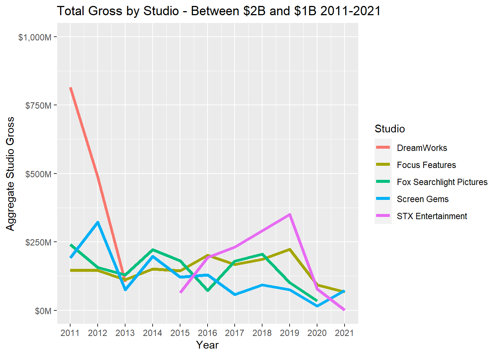

The smallest studios have more movement than the larger ones. What is particularly interesting are the new studios who only started releasing movies starting in 2018/2019. Because we calculated the aggrgate over the period 2011-2021, it will be interesting to see if their aggregate gross over the next 5 years bumps them into other gross bands.
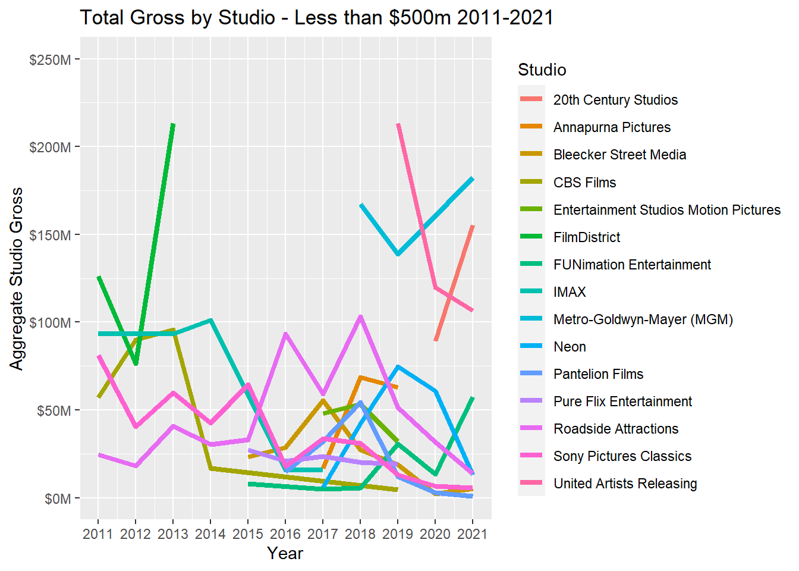
4.3 Average Ratings
The next set of data we considered was how movies are rated. We aggregated from 2 sources, and have 3 metrics: Rotten Tomatoes Critic Scores, Rotten Tomatoes Audience Scores, and IMDB Ratings. As we can see in the charts below, the averages are constrained between ~50 and ~75. However, when we zoom in, we can start to see some more nuances form. Until 2018, the 3 sets of ratings generally followed a similar pattern. However, once we reach 2019, the audience scores from Rotten Tomatoes are much more positive, and average above 70.
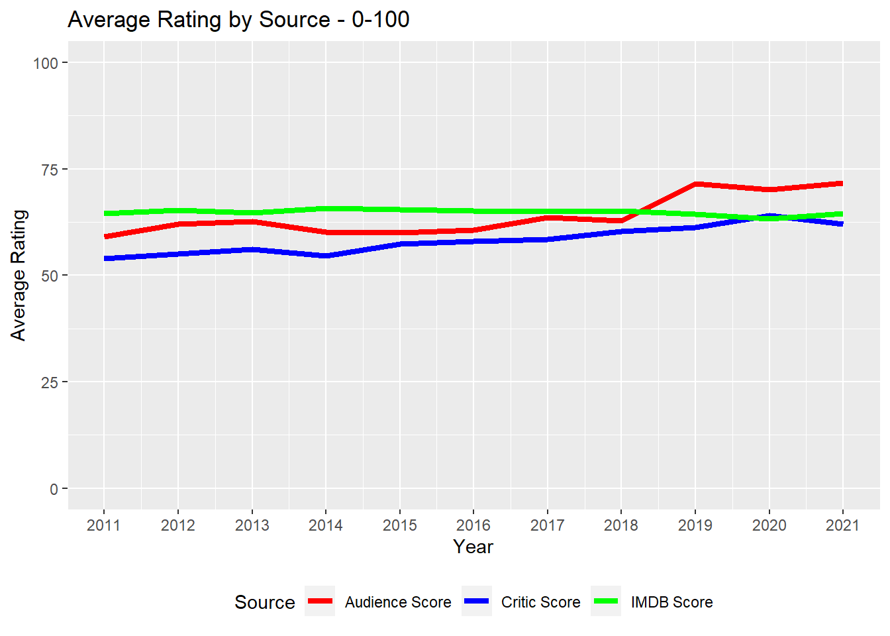
Now that we know how the average has trended over time, also want to see from each source, what the distribution of scores look like. In order to accomplish that, we created histograms.
What this shows us it that IMDB scores have a much tighter distribution around scores in the 60-65 range. Compared to rotten tomatoe scores that see a fatter right tail, and are more equally distributed compared to the IMDB ratings.
We can then check to see how normal each distribution is:
And here we have some more insight to our ratings data! Clearly the IMDB data is the closest to being normally distributed, whereas the rotten tomatoes scores have much fatter right tails.
The next step in our calculations is looking at the correlations between ratings. In order to accomplish this, we created 3 sets of scatter plots. We also wanted to see what the difference between high grossing movies was, and lower grossing movies were. Therefore, we faceted by: all movies, movies that grossed over 100M, movies that grossed over 200M, and movies that gross over 500M.
4.4 Comparing Ratings Metrics


Clearly, in aggregate, there is a high degree of correlation between Audience Scores (Rotten Tomatoes) and Critic Scores (Rotten Tomatoes). It’s interesting, though, when we compare the Rotten Tomatoes scores with IMDB, we can see that for movies with higher grosses, there is a lower level of correlation.
The next cut we wanted to include is looking at how these scores are correlated over time. As we saw in the line chart, there was some deviation after 2018, so it will be important to see what that looks like from a scatter plot perspective.
4.5 How Have Ratings Compared Over Time?

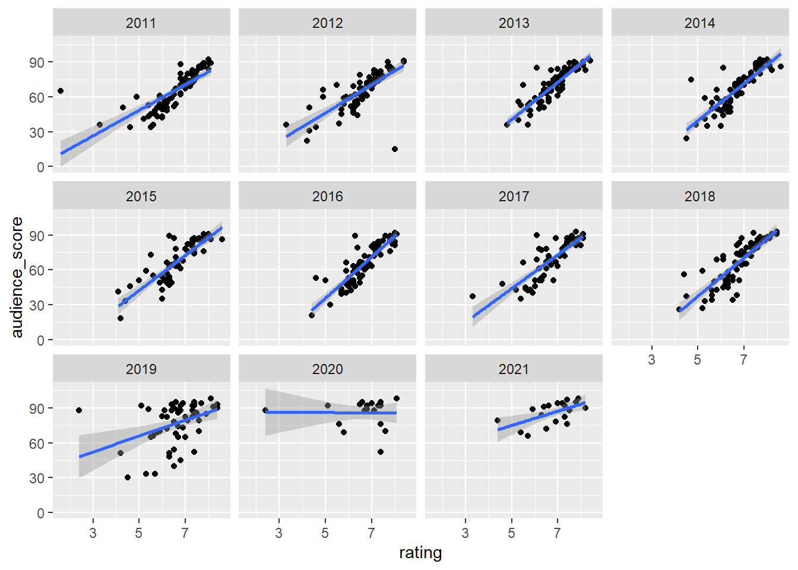
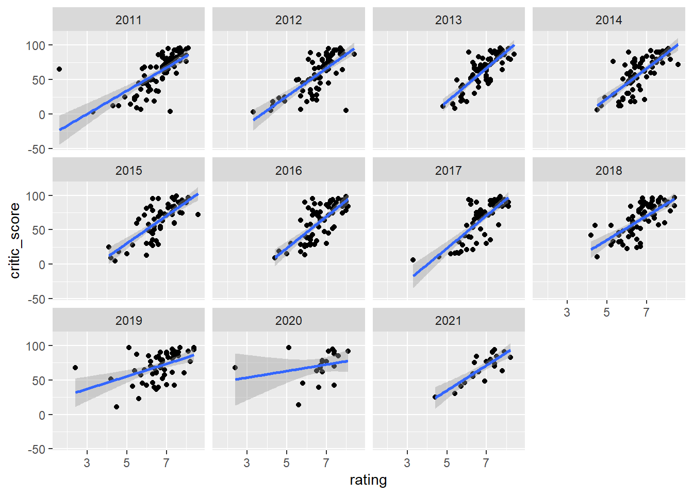
Clearly, before 2018, the scores are highly correlated. However, after 2018, the scores begin to deviate.
The next perspective we wanted to add was to see how scores impacted movie gross. In order to accomplish this, the first perspective we wanted to take was seeing a box and whisker plot to see based on score bands (in increments of 10), where gross was distributed. For the box and whisker plots, we decided to use only movies that grossed over $50M, because when we included smaller grossing films there was a significant amount of noise in the data.
4.6 Are Box Office Returns Tied to Audience Perception?

As we can see, in general, the higher the movies are rated, the more they gross. However, if we look closely at some of the middle ratings bands, e.g. 40-70, we do see a number of outliers popping up.
Now, we can take a look at the correlations.


| IMDB | Audience | Critic | |
|---|---|---|---|
| 2011 | 0.1199753 | 0.1945909 | 0.0630020 |
| 2012 | 0.1992773 | 0.1351904 | 0.0538755 |
| 2013 | 0.2987806 | 0.4100765 | 0.2379156 |
| 2014 | 0.2165173 | 0.3064287 | 0.2338210 |
| 2015 | 0.1704947 | 0.2291249 | 0.1626275 |
| 2016 | 0.2692467 | 0.2762684 | 0.1647143 |
| 2017 | 0.2665871 | 0.3187132 | 0.2211926 |
| 2018 | 0.2192689 | 0.1959654 | 0.1609221 |
| 2019 | 0.1685769 | 0.1536440 | 0.1751435 |
| 2020 | -0.0349904 | 0.2352123 | 0.0313608 |
| 2021 | 0.1291776 | 0.2077810 | -0.0605791 |

So what this tells us is that there are low levels of correlation between ratings and how a movie does. So then, what is the next metric we should look at?
The last cut that we wanted to include to round out our analysis is looking at the impact of genre. Because there are a number of genres, the most efficient way to categorize our data is by using a principle component analysis and including a biplot charting how gross and ratings are impacted by genre.
4.7 The Last Comparison - How Does Genre Play a Roll?

And here we see some interesting details!
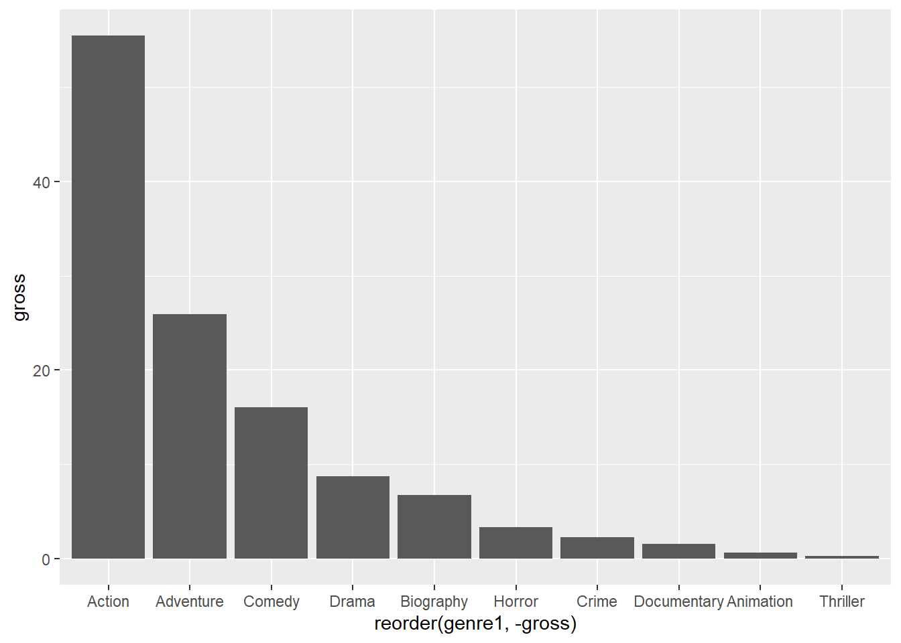
4.8 Conclusions
=======Chapter 5 Results
5.1 Aggregating gross and total gross

5.2 COVID IMPACT GOES HERE
If we zoom our cut in - we can see the month by month drop off.

5.3 Studios across the board have struggled too
Filtering only studios who have made over 1B and less than 1B


5.4 Ratings over time

5.5 Correlation between audience and critic scores - aggregate

5.6 Correlation between audience and IMDB score - aggregate

5.7 Correlation between critic and IMDB score - aggregate

5.8 Correlation between total gross and audience score - aggregate

5.9 Correlation between total gross and critic score - aggregate
movies <- read.csv("MOVIES_Final_12.11.2021_vAC.csv")
gross <- as.numeric(movies$Total.Gross)/100000
rating <- as.numeric(movies$average_rating)
audience_score <- as.numeric(movies$Score_Audience)
critic_score <- as.numeric(movies$Score_Rotten)
correlation_df <- data.frame(gross, rating, audience_score, critic_score)
g1<- ggplot(correlation_df %>% filter(gross > 0), aes(x = critic_score, y = gross)) + geom_point() +geom_smooth(method = lm)
g2<- ggplot(correlation_df %>% filter(gross > 1000), aes(x = critic_score, y = gross)) + geom_point()+geom_smooth(method = lm)
g3<- ggplot(correlation_df %>% filter(gross > 2000), aes(x = critic_score, y = gross)) + geom_point()+geom_smooth(method = lm)
g4<- ggplot(correlation_df %>% filter(gross > 5000), aes(x = critic_score, y = gross)) + geom_point()+geom_smooth(method = lm)
g1 + g2 + g3 + g4 +plot_layout(widths = c(1, 1), heights = c(1,1))
#test 5.10 Correlation by year - audience vs. critic

5.11 Correlation by year - imdb vs. audience

5.12 Correlation by year - imdb vs. critic

5.13 Correlation between total gross and IMDB score - aggregate

5.14 Correlation between total gross and critic score - aggregate
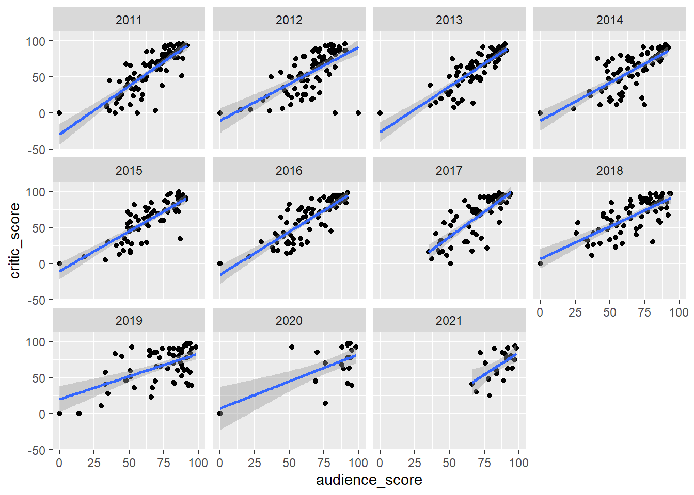
5.15 Correlation between total gross and IMDB score - aggregate

5.16 Box and Whisker - IMDB rating and gross

5.17 Box and Whisker - audience rating and gross

5.18 Box and Whisker - critic rating and gross


5.19 Aggregating and filtering top earning studios
5.20 Average IMDB rating by month and year
5.21 Average audience rating by month and year
5.22 Average critic rating by month and year
5.23 Average critic rating by month and year

 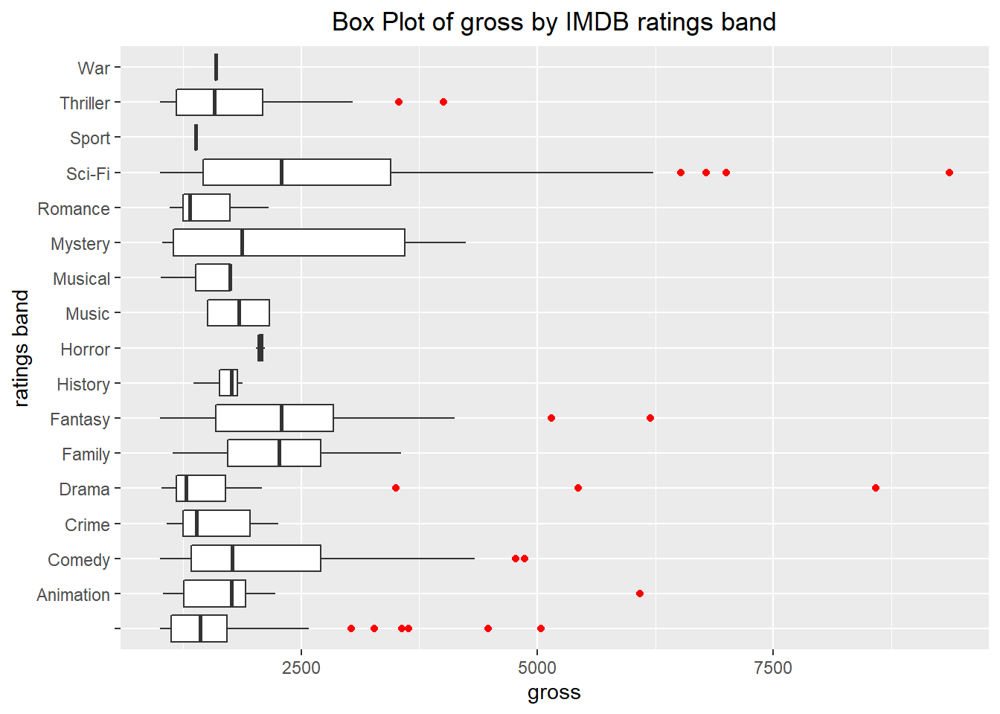
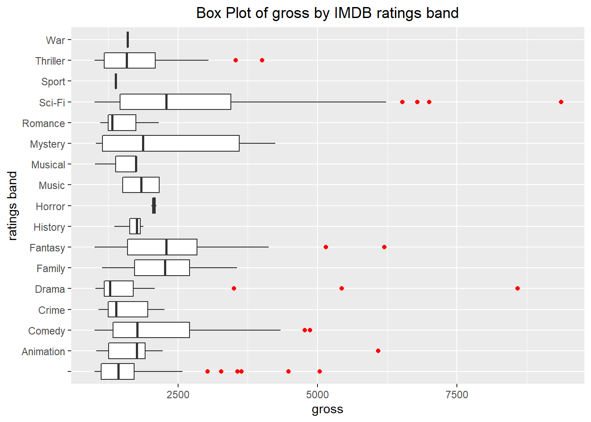
5.24 GRAVEYARD
5.25 Filtering by "Good and bad movies"
5.26 Correlation between total gross and audience score - aggregate

5.27 Aggregating and filtering top earning studios
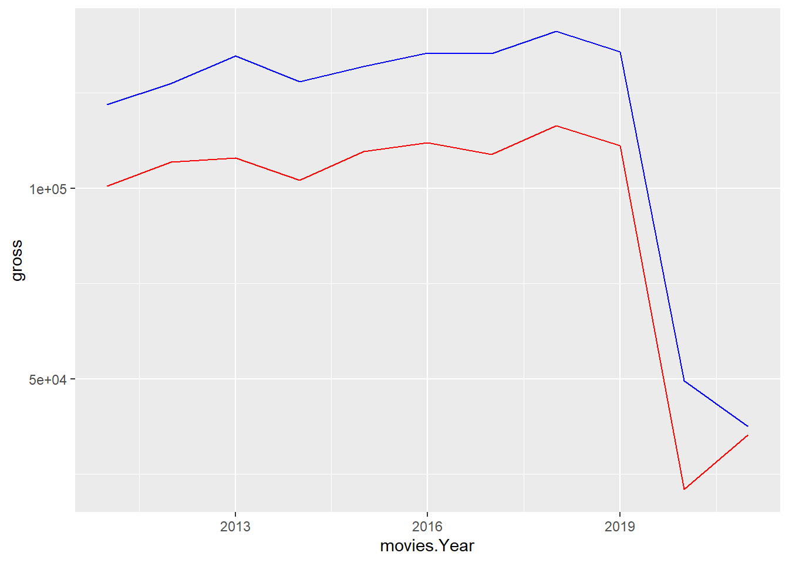
5.28 CORRELATION by genre
## Rank Title Gross X..of.Theaters
## 1 1 Harry Potter and the Deathly Hallows: Part 2 381011219 4375
## 2 2 Transformers: Dark of the Moon 352390543 4088
## 3 3 The Twilight Saga: Breaking Dawn - Part 1 274841954 4066
## 4 4 The Hangover Part II 254464305 3675
## 5 5 Pirates of the Caribbean: On Stranger Tides 241071802 4164
## 6 6 Fast Five 209837675 3793
## Total.Gross Release.Date Studio Year
## 1 381011219 7/15 Warner Bros. 2011
## 2 352390543 6/29 DreamWorks 2011
## 3 281287133 11/18 Summit Entertainment 2011
## 4 254464305 5/26 Warner Bros. 2011
## 5 241071802 5/20 Walt Disney Studios Motion Pictures 2011
## 6 209837675 4/29 Universal Pictures 2011
## Score_Rotten Score_Audience genre genre1 genre2
## 1 96 89 Adventure,Fantasy,Mystery Adventure Fantasy
## 2 35 55 Action,Adventure,Sci-Fi Action Adventure
## 3 25 60 Adventure,Drama,Fantasy Adventure Drama
## 4 34 52 Comedy Comedy
## 5 33 54 Action,Adventure,Fantasy Action Adventure
## 6 77 83 Action,Adventure,Crime Action Adventure
## genre3 average_rating numvotes startYear MISSING.VALUE Missing.Rotten
## 1 Mystery 8.1 808813 2011 0 0
## 2 Sci-Fi 6.2 395497 2011 0 0
## 3 Fantasy 4.9 232357 2011 0 0
## 4 6.5 479995 2011 0 0
## 5 Fantasy 6.6 500148 2011 0 0
## 6 Crime 7.3 368386 2011 0 0
## Missing.IMDB day month final_date
## 1 0 15 7 7/15/2011
## 2 0 29 6 6/29/2011
## 3 0 18 11 11/18/2011
## 4 0 26 5 5/26/2011
## 5 0 20 5 5/20/2011
## 6 0 29 4 4/29/2011

 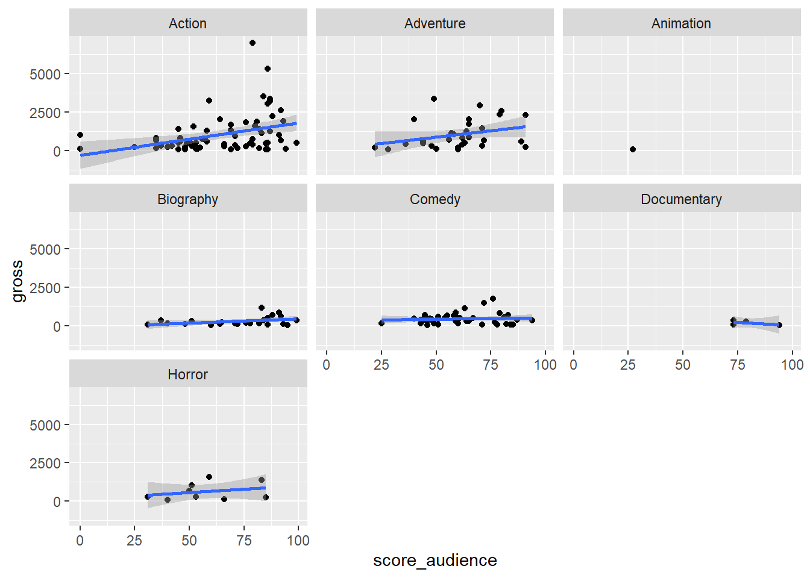
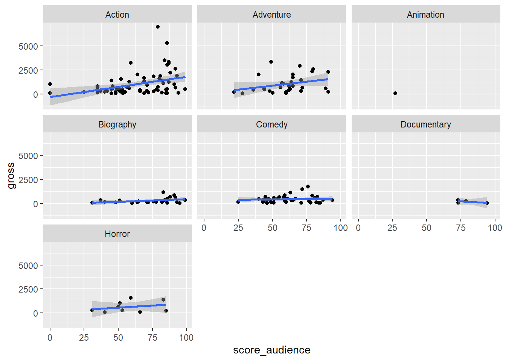